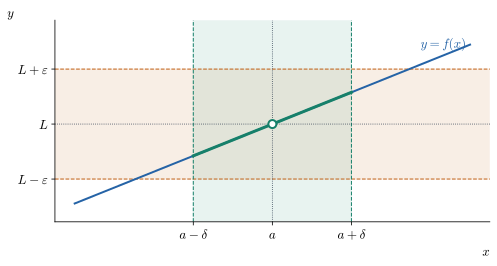
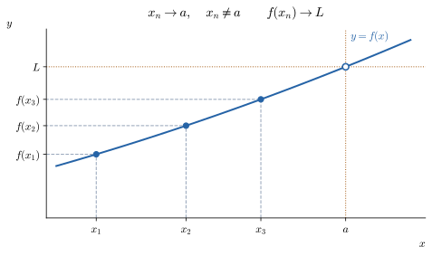
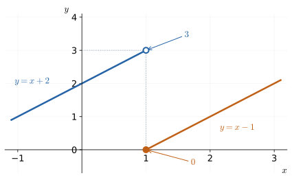
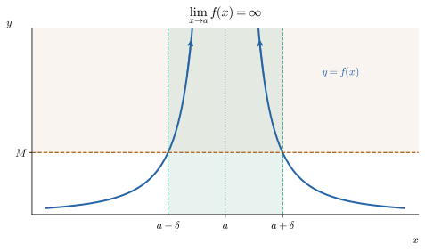
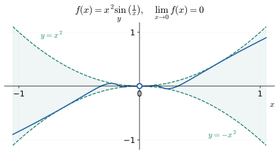
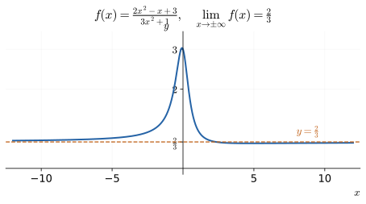
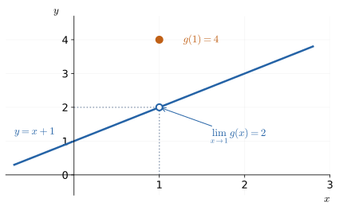
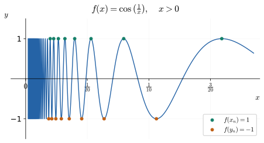

3 גבולות של פונקציות ורציפות
3.1 גבול של פונקציה בנקודה
הגדרה 3.1.1 — גבול של פונקציה בנקודה.
תהי \(f\) פונקציה המוגדרת בכל הנקודות של קטע פתוח סביב \(a\), פרט אולי לנקודה \(a\) עצמה. נאמר כי הגבול של \(f(x)\) כאשר \(x\) שואף אל \(a\) הוא \(L\), ונסמן \[\lim_{x\to a}f(x)=L,\] אם לכל \(\varepsilon>0\) קיים \(\delta>0\) כך שלכל \(x\) בתחום ההגדרה, \[0<|x-a|<\delta\quad\Longrightarrow\quad |f(x)-L|<\varepsilon.\] כאן \(a,L\) הם מספרים ממשיים.
הסבר — האנלוגיה לגבול של סדרה.
זו אותה דרישה כמו בגבול של סדרה: הערכים צריכים להיות קרובים אל \(L\) כרצוננו. ההבדל הוא באופן ההתקרבות.
| בסדרה | בפונקציה |
|---|---|
| דורשים \(\lvert a_n-L\rvert<\varepsilon\) | דורשים \(\lvert f(x)-L\rvert<\varepsilon\) |
| בוחרים \(N\) והדרישה חלה לכל \(n\ge N\) | בוחרים \(\delta>0\) והדרישה חלה לכל \(x\) המקיים \(0<\lvert x-a\rvert<\delta\) |
האות \(\delta\) (דלתא) מציינת כמה קרוב צריך \(x\) להיות אל \(a\). בוחרים אותה אחרי שניתן \(\varepsilon\), והיא צריכה להתאים לכל הנקודות במרחק זה, ולא רק לנקודה אחת.
בציור מצמצמים את הרצועה האנכית סביב \(a\) עד שכל נקודות הגרף שבה, פרט לנקודה עם \(x=a\), נמצאות ברצועה האופקית סביב \(L\).

התנאי \(0<|x-a|\) מוציא את \(x=a\) מהבדיקה. לכן הגבול אינו תלוי בערך \(f(a)\), ואף אינו דורש שערך זה יהיה מוגדר.
דוגמה 3.1.2 — גבול של פונקציה קווית.
עבור \(f(x)=2x+1\) נראה כי \[\lim_{x\to1}f(x)=3.\]
המרחק מהגבול הוא \[|f(x)-3|=|2x-2|=2|x-1|.\] כדי שהמרחק יהיה קטן מ \(\varepsilon\), מספיק לדרוש \(|x-1|<\frac{\varepsilon}{2}\).
לכן, לכל \(\varepsilon>0\) נבחר \(\delta=\frac{\varepsilon}{2}\). אם \(0<|x-1|<\delta\), אז \[|f(x)-3|=2|x-1|<2\delta=\varepsilon.\] זו בדיוק הדרישה בהגדרת הגבול.
דוגמה 3.1.3 — גבול גם כשהפונקציה אינה מוגדרת בנקודה.
הפונקציה \(g(x)=4\) מוגדרת לכל \(x\ne2\). למרות ש \(g(2)\) אינו מוגדר, \[\lim_{x\to2}g(x)=4.\] לכל \(x\) בתחום מתקיים \(|g(x)-4|=0<\varepsilon\), ולכן כל \(\delta>0\) מתאים בהגדרת הגבול.
בדיקה עצמית.
נתונה הפונקציה \[h(x)=\begin{cases}6,&x\ne-1,\\2,&x=-1.\end{cases}\] האם \(\displaystyle\lim_{x\to-1}h(x)=6\)?
כן. בכל נקודה \(x\ne-1\) מתקיים \(h(x)=6\). הערך \(h(-1)=2\) אינו משתתף בבדיקת הגבול.
הקשר לסדרות: משפט היינה
משפט 3.1.4 — משפט היינה.
תהי \(f\) מוגדרת בקטע פתוח סביב \(a\), פרט אולי לנקודה \(a\). אז \[\lim_{x\to a}f(x)=L\] אם ורק אם לכל סדרה \((x_n)_{n=1}^{\infty}\) של נקודות בתחום ההגדרה, המקיימת \(x_n\ne a\) לכל \(n\) ו \(x_n\to a\), מתקיים \[f(x_n)\to L.\]
הסבר — התקרבות לנקודה באמצעות סדרות.
הסדרה \((x_n)_{n=1}^{\infty}\) מתארת דרך להתקרב אל \(a\). הסדרה \((f(x_n))_{n=1}^{\infty}\) מתארת את ערכי הפונקציה באותן נקודות.
באיור הסכמטי, מכל \(x_n\) עולים אל הגרף וקוראים את הגובה \(f(x_n)\). מצוירת דרך התקרבות אחת; משפט היינה דורש התאמה לכל סדרה מתאימה.

אם \(\displaystyle\lim_{x\to a}f(x)=L\), אז ברגע ש \(x_n\) קרוב מספיק אל \(a\), גם \(f(x_n)\) קרוב אל \(L\). לכן הגדרת הגבול מבטיחה \(f(x_n)\to L\).
משפט היינה אומר שגם הכיוון ההפוך נכון. כדי לקבוע גבול צריך טיעון המתאים לכל סדרה כזו. בדיקת סדרה אחת אינה מספיקה; לעומת זאת, שתי סדרות המתקרבות אל \(a\) ונותנות גבולות שונים לערכי הפונקציה שוללות את קיומו של גבול.
דוגמה 3.1.5 — גבול של \(x^2\) באמצעות היינה.
עבור \(f(x)=x^2\) נחשב את \[\lim_{x\to3}f(x).\]
ניקח סדרה כלשהי \((x_n)_{n=1}^{\infty}\) המקיימת \(x_n\to3\) ו \(x_n\ne3\). לפי כלל החזקה לסדרות, \[f(x_n)=x_n^2\longrightarrow3^2=9.\] לא בחרנו נוסחה מסוימת ל \(x_n\): החישוב מתאים לכל סדרה כזו. לכן משפט היינה נותן \[\lim_{x\to3}x^2=9.\]
דוגמה 3.1.6 — שתי סדרות ששוללות גבול.
נתונה הפונקציה \(f(x)=\frac{|x|}{x}\), עבור \(x\ne0\). נבדוק אם \(\displaystyle\lim_{x\to0}f(x)\) קיים.
נבחר שתי סדרות, עבור \(n\ge1\): \[x_n=\frac{1}{n}\to0,\qquad y_n=-\frac{1}{n}\to0.\] כל איבריהן שונים מאפס ונמצאים בתחום ההגדרה. מכיוון ש \(x_n>0\) ו \(y_n<0\), \[f(x_n)=1\to1,\] \[f(y_n)=-1\to-1.\] גבולות ערכי הפונקציה שונים. לפי משפט היינה, \(\displaystyle\lim_{x\to0}\frac{|x|}{x}\) אינו קיים.
בדיקה עצמית.
נתון כי \(f\) מוגדרת לכל \(x\ne0\) וכי \(f\left(\frac{1}{n}\right)\to5\). האם בהכרח \(\displaystyle\lim_{x\to0}f(x)=5\)?
לא. נבדקה רק סדרה אחת. למשל, הפונקציה המוגדרת על ידי \(f(x)=5\) כאשר \(x>0\) ו \(f(x)=0\) כאשר \(x<0\) מקיימת את הנתון, אבל לאורך \(x_n=-\frac{1}{n}\) ערכיה שואפים לאפס. משפט היינה דורש אותו גבול לאורך כל סדרה מתאימה.
חישוב באמצעות גבולות מוכרים
משפט 3.1.7 — גבולות בסיסיים וחשבון גבולות.
לכל קבועים ממשיים \(a,c\), \[\lim_{x\to a}x=a,\qquad \lim_{x\to a}c=c.\] אם \(f(x)\to A\) ו \(g(x)\to B\) כאשר \(x\to a\), ושני הגבולות סופיים, אז \[\begin{aligned} \lim_{x\to a}(f(x)+g(x))&=A+B,\\ \lim_{x\to a}(f(x)-g(x))&=A-B,\\ \lim_{x\to a}(f(x)g(x))&=AB,\\ \lim_{x\to a}(cf(x))&=cA. \end{aligned}\] אם \(B\ne0\), אז גם \[\lim_{x\to a}\frac{f(x)}{g(x)}=\frac{A}{B}.\] לחזקה טבעית קבועה \(k\ge1\) ולשורש ריבועי מתקיים \[\lim_{x\to a}(f(x))^k=A^k,\qquad \lim_{x\to a}\sqrt{f(x)}=\sqrt{A}.\] בכלל השורש נדרש \(f(x)\ge0\) לכל \(x\) קרוב מספיק אל \(a\), פרט אולי ל \(a\) עצמה.
הסבר — מדוע אותם כללי חישוב חלים על פונקציות?
ניקח סדרה כלשהי \(x_n\to a\), עם \(x_n\ne a\). לפי משפט היינה, מתקיים \(f(x_n)\to A\) ו \(g(x_n)\to B\). כעת אפשר להפעיל על הסדרות האלה את חשבון הגבולות לסדרות ואת כללי החזקות והשורשים. הפעלה נוספת של משפט היינה נותנת את הגבול של הפונקציה.
גם התנאים נשארים בעינם: בפרט, כלל המנה אינו חל כשגבול המכנה הוא אפס. הצבה שנותנת \(\frac{0}{0}\) אינה תוצאה של חישוב גבול.
דוגמה 3.1.8 — מנה שמכנהּ שואף למספר שאינו אפס.
עבור \(f(x)=\frac{x^2+2}{x+1}\) נחשב את \[\lim_{x\to2}f(x).\] התחום הוא \(x\ne-1\). לפי חשבון הגבולות, \[x^2+2\to2^2+2=6,\] \[x+1\to2+1=3.\] גבול המכנה אינו אפס, ולכן \[\lim_{x\to2}\frac{x^2+2}{x+1}=\frac{6}{3}=2.\]
דוגמה 3.1.9 — צמצום גורם לפני חישוב הגבול.
נתונה \(g(x)=\frac{x^2-4}{x-2}\), עבור \(x\ne2\). נחשב את \[\lim_{x\to2}g(x).\]
המונה והמכנה שואפים לאפס, ולכן אי אפשר להשתמש מיד בכלל המנה.
לכל \(x\ne2\) מותר לצמצם את הגורם \(x-2\): \[\frac{x^2-4}{x-2}=\frac{(x-2)(x+2)}{x-2}=x+2.\] בחישוב הגבול ממילא בודקים רק \(x\ne2\). לכן, לפי הגדרת הגבול וכלל החיבור, \[\lim_{x\to2}\frac{x^2-4}{x-2}=\lim_{x\to2}(x+2)=4.\] הצמצום מאפשר לחשב את הגבול, אך אינו מגדיר את \(g(2)\).
שיטת פתרון 3.1.10 — חישוב גבול לאחר צמצום.
- בדקו את גבולות המונה והמכנה. אם גבול המכנה שונה מאפס, השתמשו בכלל המנה.
- אם מתקבל \(\frac{0}{0}\), נסו לפרק לגורמים ולצמצם גורם המשותף למונה ולמכנה. ציינו היכן הגורם שונה מאפס.
- חשבו את גבול הביטוי המצומצם באמצעות חשבון הגבולות.
בדיקה עצמית.
עבור \(f(x)=\frac{x^2-1}{x-1}\), כאשר \(x\ne1\), המונה והמכנה שואפים לאפס כאשר \(x\to1\). האם מכאן נובע שהגבול אינו קיים?
לא. לכל \(x\ne1\) מתקיים \(f(x)=x+1\), ולכן הגבול הוא \(2\) לפי כלל החיבור. אי אפשר להשתמש בכלל המנה לפני הצמצום.
דוגמה 3.1.11 — ביטול הפרש שורשים בעזרת צמוד.
עבור \(f(x)=\frac{\sqrt{x+5}-3}{x-4}\) נחשב את \[\lim_{x\to4}f(x).\] התחום הוא \(x\ge-5\), \(x\ne4\). המונה והמכנה שואפים לאפס.
נכפול את המונה ואת המכנה בצמוד \(\sqrt{x+5}+3\), שהוא חיובי: \[\frac{\sqrt{x+5}-3}{x-4} =\frac{(x+5)-9}{(x-4)(\sqrt{x+5}+3)}.\] לכל \(x\ne4\) אפשר לצמצם את הגורם \(x-4\): \[f(x)=\frac{1}{\sqrt{x+5}+3}.\] כעת גבול המכנה הוא \(6\ne0\). לפי כללי השורש והמנה, \[\lim_{x\to4}f(x)=\frac{1}{6}.\]
שיטת פתרון 3.1.12 — חישוב גבול בעזרת צמוד.
- כשהפרש שורשים נותן אפס, כופלים את המונה ואת המכנה בסכום המתאים.
- משתמשים בהפרש ריבועים ומצמצמים גורם משותף, תוך בדיקה שהוא שונה מאפס בנקודות הנבדקות.
- מחשבים את גבול הביטוי החדש לפי חשבון הגבולות.
תרגילים
תרגיל 3.1.13.
חשבו את הגבולות. בכל סעיף כתבו את החישוב לאחר החלפת \(x\) בערך שאליו הוא שואף, ואחריו את התוצאה. חשבון הגבולות מצדיק את המעברים.
(א)
\[\lim_{x\to-1}(3x^2-2x).\]
\(\displaystyle\lim_{x\to-1}(3x^2-2x)=\) \(3(-1)^2-2(-1)\) \(=\) \(5\)
לפי כללי החזקה, הכפל והחיסור, הגבול הוא \(3(-1)^2-2(-1)=3+2=5\).
(ב)
\[\lim_{x\to2}\frac{2x-1}{x+4}.\]
\(\displaystyle\lim_{x\to2}\frac{2x-1}{x+4}=\) \(\frac{2\cdot2-1}{2+4}\) \(=\) \(\frac{1}{2}\)
המונה שואף ל \(3\) והמכנה ל \(6\ne0\). לפי כלל המנה, הגבול הוא \(\frac{3}{6}=\frac{1}{2}\).
(ג)
\[\lim_{x\to5}\sqrt{x+4}.\]
\(\displaystyle\lim_{x\to5}\sqrt{x+4}=\) \(\sqrt{5+4}\) \(=\) \(3\)
הביטוי \(x+4\) חיובי ליד \(5\) ושואף ל \(9\). לפי כלל השורש, הגבול הוא \(\sqrt{9}=3\).
תרגיל 3.1.14.
חשבו את הגבולות הבאים באמצעות פירוק לגורמים וצמצום. כתבו את המונה כמכפלה, את הביטוי המצומצם ואת הגבול.
(א) עבור \(f(x)=\frac{x^2-9}{x-3}\), \(x\ne3\), חשבו את \[\lim_{x\to3}f(x).\]
\(x^2-9=\) \((x-3)(x+3)\)
\(f(x)=\) \(x+3\) \(\quad(x\ne3)\)
\(\displaystyle\lim_{x\to3}f(x)=\) \(6\)
לכל \(x\ne3\) הגורם \(x-3\) שונה מאפס, ולכן \[f(x)=\frac{(x-3)(x+3)}{x-3}=x+3.\] לפי כלל החיבור, הגבול הוא \(3+3=6\).
(ב) עבור \(g(x)=\frac{x^2+x-6}{x-2}\), \(x\ne2\), חשבו את \[\lim_{x\to2}g(x).\]
\(x^2+x-6=\) \((x-2)(x+3)\)
\(g(x)=\) \(x+3\) \(\quad(x\ne2)\)
\(\displaystyle\lim_{x\to2}g(x)=\) \(5\)
לכל \(x\ne2\) אפשר לצמצם את הגורם \(x-2\), ולקבל \(g(x)=x+3\). לפי כלל החיבור, הגבול הוא \(2+3=5\).
תרגיל 3.1.15.
נתונה הפונקציה \(f(x)=\frac{x-1}{|x-1|}\), עבור \(x\ne1\). נבדוק את התנהגותה לאורך הסדרות \[x_n=1+\frac{1}{n},\qquad y_n=1-\frac{1}{n},\qquad n\ge1.\]
(א) חשבו את גבולות שתי הסדרות ואת ערכי הפונקציה לאורך כל אחת מהן.
\(\displaystyle\lim_{n\to\infty}x_n=\) \(1\)
\(\displaystyle\lim_{n\to\infty}y_n=\) \(1\)
\(f(x_n)=\) \(1\) \(\quad(n\ge1)\)
\(f(y_n)=\) \(-1\) \(\quad(n\ge1)\)
(ב) האם \(\displaystyle\lim_{x\to1}f(x)\) קיים? לא
שתי הסדרות שואפות ל \(1\), ואף איבר שלהן אינו שווה ל \(1\). מכיוון ש \(x_n-1>0\) ו \(y_n-1<0\), מתקיים \(f(x_n)=1\) ו \(f(y_n)=-1\). אלה סדרות קבועות בעלות גבולות שונים, ולכן משפט היינה שולל גבול לפונקציה בנקודה \(1\).
תרגיל 3.1.16.
חשבו את הגבולות. בכל סעיף כתבו ביטוי שווה לפונקציה בנקודות הנבדקות, לאחר צמצום, ואחריו את הגבול.
(א) עבור \(f(x)=\frac{x^2-5x+6}{x-2}\), \(x\ne2\), חשבו את \[\lim_{x\to2}f(x).\]
\(x^2-5x+6=\) \((x-2)(x-3)\)
\(f(x)=\) \(x-3\) \(\quad(x\ne2)\)
\(\displaystyle\lim_{x\to2}f(x)=\) \(-1\)
לכל \(x\ne2\) מצמצמים את הגורם \(x-2\), ומקבלים \(f(x)=x-3\). לפי כלל החיסור, הגבול הוא \(2-3=-1\).
(ב) עבור \(g(x)=\frac{\sqrt{x+1}-2}{x-3}\), \(x\ge-1\), \(x\ne3\), חשבו את \[\lim_{x\to3}g(x).\] כתבו גם את הצמוד שבו כופלים.
הצמוד הוא \(\sqrt{x+1}+2\).
\(g(x)=\) \(\frac{1}{\sqrt{x+1}+2}\) \(\quad(x\ne3)\)
\(\displaystyle\lim_{x\to3}g(x)=\) \(\frac{1}{4}\)
הצמוד חיובי בתחום. הכפל בו נותן מונה \((x+1)-4=x-3\), שאפשר לצמצם עבור \(x\ne3\). המכנה שנותר שואף ל \(4\), ולכן כלל המנה נותן \(\frac{1}{4}\).
(ג) עבור \(h(x)=\frac{x-5}{\sqrt{x+4}-3}\), \(x\ge-4\), \(x\ne5\), חשבו את \[\lim_{x\to5}h(x).\]
\(h(x)=\) \(\sqrt{x+4}+3\) \(\quad(x\ne5)\)
\(\displaystyle\lim_{x\to5}h(x)=\) \(6\)
נכפול את המונה ואת המכנה ב \(\sqrt{x+4}+3\). המכנה נעשה \((x+4)-9=x-5\). לאחר צמצום מתקבל \(h(x)=\sqrt{x+4}+3\), שגבולו \(6\) לפי כללי השורש והחיבור.
3.2 גבולות חד־צדדיים
הגדרה 3.2.1 — גבול מימין וגבול משמאל.
תהי \(f\) מוגדרת בקטע \((a,a+r)\) עבור \(r>0\). נאמר כי הגבול מימין הוא \(L\), ונסמן \(\displaystyle\lim_{x\to a^+}f(x)=L\), אם לכל \(\varepsilon>0\) קיים \(0<\delta\le r\) כך שלכל \(x\), \[a<x<a+\delta\quad\Longrightarrow\quad |f(x)-L|<\varepsilon.\]
אם \(f\) מוגדרת בקטע \((a-r,a)\), נגדיר באותו אופן גבול משמאל, המסומן \(\displaystyle\lim_{x\to a^-}f(x)=L\), באמצעות הדרישה \[a-\delta<x<a\quad\Longrightarrow\quad |f(x)-L|<\varepsilon.\]
הסבר — התקרבות מצד אחד.
הסימון \(x\to a^+\) אומר ש \(x\) מתקרב אל \(a\) דרך ערכים גדולים מ \(a\). הסימון \(x\to a^-\) אומר שמתקרבים דרך ערכים קטנים מ \(a\). הסימנים מציינים צד, ולא את הסימן של \(a\).
גם כאן \(x=a\) אינו נבדק. כדי להבטיח קרבה לגבול, מספיק לשלוט בערכי הפונקציה בצד שממנו מתקרבים; הערכים בצד השני אינם משתתפים בדרישה.
כלל — היינה וחשבון גבולות בצד אחד.
קריטריון היינה חל גם על גבולות חד־צדדיים: מימין בודקים את כל הסדרות \(x_n\to a\) עם \(x_n>a\) לכל \(n\), ומשמאל את כל הסדרות \(x_n\to a\) עם \(x_n<a\) לכל \(n\). איברי הסדרות צריכים להיות בתחום ההגדרה.
כללי חשבון הגבולות חלים בכל צד בנפרד, עם אותם תנאים.
דוגמה 3.2.2 — גבולות שונים משני צדי נקודה.
נתונה הפונקציה \[f(x)=\begin{cases}x+2,&x<1,\\x-1,&x\ge1.\end{cases}\] משמאל ל \(1\) משתמשים בנוסחה \(x+2\), ומימין משתמשים בנוסחה \(x-1\). לפי כלל החיבור והחיסור, \[\lim_{x\to1^-}f(x)=1+2=3,\] \[\lim_{x\to1^+}f(x)=1-1=0.\]

העיגול הריק מסמן שהנקודה \((1,3)\) אינה בגרף. העיגול המלא מסמן \(f(1)=0\); הגבול מימין מחושב לפי הערכים עם \(x>1\).
דוגמה 3.2.3 — גבול בקצה תחום ההגדרה.
הפונקציה \(g(x)=\sqrt{x}\) מוגדרת עבור \(x\ge0\). אפשר להתקרב אל \(0\) מתוך התחום רק מימין.
לכל סדרה חיובית \(x_n\to0\), כלל השורש לסדרות נותן \(\sqrt{x_n}\to0\). לכן, לפי קריטריון היינה בגרסתו החד־צדדית, \[\lim_{x\to0^+}\sqrt{x}=0.\] אין לפונקציה ערכים משמאל ל \(0\), ולכן לא מוגדר כאן גבול משמאל. לפי ההגדרה הדו־צדדית שבפרק, לא כותבים כאן גבול דו־צדדי.
בדיקה עצמית.
עבור \(f(x)=x^2\), כדי לחשב את \(\displaystyle\lim_{x\to-2^+}f(x)\), מאיזה צד של \(-2\) בוחרים את \(x\)?
מימין פירושו \(x>-2\). אין דרישה ש \(x\) יהיה חיובי.
משפט 3.2.4 — מתי קיים גבול דו־צדדי?
תהי \(f\) מוגדרת בקטע פתוח סביב \(a\), פרט אולי ל \(a\) עצמה. אז \[\lim_{x\to a}f(x)=L\quad\Longleftrightarrow\quad \lim_{x\to a^-}f(x)=L\quad\heb{וגם}\quad\lim_{x\to a^+}f(x)=L.\]
הסבר — מדוע צריך אותו גבול בשני הצדדים?
כל \(x\ne a\) נמצא משמאל ל \(a\) או מימין לה. אם בשני הצדדים ערכי הפונקציה קרובים לאותו \(L\), נבחר את הקטן משני ערכי \(\delta\) המתאימים. כך הדרישה מתקיימת משני הצדדים יחד.
לעומת זאת, אם גבולות הצדדים שונים, הם אינם יכולים להיות שניהם הגבול הדו־צדדי. לכן בפונקציה \(f(x)=x+2\) עבור \(x<1\) ו \(f(x)=x-1\) עבור \(x\ge1\), הגבול כאשר \(x\to1\) אינו קיים: הגבולות החד־צדדיים הם \(3\) ו \(0\).
דוגמה 3.2.5 — שתי נוסחאות שנותנות אותו גבול.
נתונה הפונקציה \(h(x)=|x|\). לכל \(x<0\) מתקיים \(h(x)=-x\), ולכל \(x>0\) מתקיים \(h(x)=x\). לכן, לפי חשבון הגבולות, \[\lim_{x\to0^-}|x|=\lim_{x\to0^-}(-x)=0,\] \[\lim_{x\to0^+}|x|=\lim_{x\to0^+}x=0.\] לפי המשפט על שני הצדדים, \[\lim_{x\to0}|x|=0.\] שינוי הנוסחה בנקודה אינו מונע קיום גבול.
בדיקה עצמית.
נתונה הפונקציה \[p(x)=\begin{cases}2-x,&x<0,\\7,&x=0,\\2+x,&x>0.\end{cases}\] שני הגבולות החד־צדדיים בנקודה \(0\) שווים ל \(2\). האם \(p(0)=7\) מונע את קיומו של גבול דו־צדדי?
לא. לפי המשפט על שני הצדדים, \(\displaystyle\lim_{x\to0}p(x)=2\). הערך בנקודה אינו משפיע על הגבול.
גבול אינסופי בנקודה סופית
הגדרה 3.2.6 — שאיפה לאינסוף ליד נקודה.
תהי \(f\) מוגדרת לכל \(x\) בקטע פתוח סביב \(a\), פרט אולי ל \(a\) עצמה. כותבים \[\lim_{x\to a}f(x)=\infty\] אם לכל \(M>0\) קיים \(\delta>0\) כך שלכל \(x\), \[0<|x-a|<\delta\quad\Longrightarrow\quad f(x)>M.\] מקטינים את \(\delta\) במידת הצורך כך שכל הנקודות הנבדקות יהיו בתחום ההגדרה.
לגבול \(-\infty\) מחליפים את הדרישה ב \(f(x)<-M\). בגבול מימין מחליפים את התנאי על \(x\) ב \(0<x-a<\delta\), ובגבול משמאל ב \(0<a-x<\delta\); אז נדרשת הגדרה רק בצד המתאים.
הסבר — המשתנה מתקרב לנקודה, וערכי הפונקציה גדלים.
בדומה לגבול אינסופי של סדרה, ערכי הפונקציה צריכים לעבור כל סף ולהישאר מעבר לו. כאן מתקרבים אל \(a\) במקום להתקדם לאינדקס גדול.
באיור הסכמטי, בתוך הרצועה \(a-\delta<x<a+\delta\), פרט ל \(x=a\), הגרף כולו מעל \(M\). לכל סף חדש צריך למצוא רצועה מתאימה.

הסימון \(\infty\) אינו מספר ממשי: אין כאן גבול סופי. גם שאיפה ל \(-\infty\) מתארת גודל הולך וגדל בערך מוחלט, אבל עם ערכים שליליים.
דוגמה 3.2.7 — הופכי משני צדי נקודת האפס של המכנה.
נתונה \(f(x)=\frac{1}{x-1}\), עבור \(x\ne1\). מימין ל \(1\) המכנה חיובי וקטן. לכל \(M>0\), אם \(0<x-1<\frac{1}{M}\), אז \(f(x)>M\). משמאל המכנה שלילי: אם \(0<1-x<\frac{1}{M}\), אז \(f(x)<-M\). לכן, לפי הגדרת הגבול האינסופי בנקודה, \[\lim_{x\to1^+}\frac{1}{x-1}=\infty,\qquad \lim_{x\to1^-}\frac{1}{x-1}=-\infty.\] אין גבול דו־צדדי, סופי או אינסופי: אף אחת מהדרישות אינה מתקיימת בשני הצדדים יחד.
דוגמה 3.2.8 — ריבוע המכנה נותן אותו סימן בשני הצדדים.
נתונה \(g(x)=\frac{1}{x^2}\), עבור \(x\ne0\). לכל \(M>0\), אם \(0<|x|<\frac{1}{\sqrt{M}}\), אז \(x^2<\frac{1}{M}\) ולכן \(g(x)>M\). לפי הגדרת הגבול האינסופי בנקודה, \[\lim_{x\to0}\frac{1}{x^2}=\infty.\] הטיעון חל על \(x\) חיובי ושלילי כאחד, ולכן גם שני הגבולות החד־צדדיים הם \(\infty\).
בדיקה עצמית.
עבור \(f(x)=-\frac{1}{x^2}\), \(x\ne0\), מהו \(\displaystyle\lim_{x\to0^-}f(x)\)?
המכנה חיובי וקטן, והמונה שלילי. לכל \(M>0\), התנאי \(0<|x|<\frac{1}{\sqrt{M}}\) מבטיח \(-\frac{1}{x^2}<-M\), כנדרש בהגדרה. סימן הצד אינו קובע את סימן הגבול.
תרגילים
תרגיל 3.2.9.
נתונה הפונקציה \[f(x)=\begin{cases}2x+1,&x<2,\\x^2,&x\ge2.\end{cases}\] חשבו את \(\displaystyle\lim_{x\to2^-}f(x)\), את \(\displaystyle\lim_{x\to2^+}f(x)\) ואת \(f(2)\), וקבעו אם \(\displaystyle\lim_{x\to2}f(x)\) קיים. בכל גבול כתבו תחילה את החישוב לפי הנוסחה המתאימה לצד.
\(\displaystyle\lim_{x\to2^-}f(x)=\) \(2\cdot2+1\) \(=\) \(5\)
\(\displaystyle\lim_{x\to2^+}f(x)=\) \(2^2\) \(=\) \(4\)
\(f(2)=\) \(4\)
האם \(\displaystyle\lim_{x\to2}f(x)\) קיים? לא
משמאל משתמשים ב \(2x+1\) ומקבלים \(5\); מימין משתמשים ב \(x^2\) ומקבלים \(4\). לפי המשפט על שני הצדדים, הגבול הדו־צדדי אינו קיים. הערך \(f(2)=4\) נקבע לפי הענף הכולל שוויון.
תרגיל 3.2.10.
נתונה הפונקציה \(g(x)=|x-2|+1\). כתבו נוסחה ללא ערך מוחלט בכל אחד מהצדדים של \(2\), וחשבו את \[\lim_{x\to2^-}g(x),\qquad \lim_{x\to2^+}g(x).\]
\(g(x)=\) \(3-x\) \(\quad(x<2)\)
\(g(x)=\) \(x-1\) \(\quad(x>2)\)
\(\displaystyle\lim_{x\to2^-}g(x)=\) \(1\)
\(\displaystyle\lim_{x\to2^+}g(x)=\) \(1\)
\(\displaystyle\lim_{x\to2}g(x)=\) \(1\)
אם \(x<2\), אז \(|x-2|=2-x\), ולכן \(g(x)=3-x\to1\). אם \(x>2\), אז \(|x-2|=x-2\), ולכן \(g(x)=x-1\to1\). שני הגבולות שווים, ולכן המשפט על שני הצדדים נותן גבול דו־צדדי \(1\).
תרגיל 3.2.11.
נתונה הפונקציה \(h(x)=\sqrt{3-x}\).
(א) כתבו את תחום ההגדרה כקטע: \((-\infty,3]\).
(ב) מאיזה צד אפשר להתקרב אל \(3\) מתוך התחום? משמאל
(ג) חשבו את \[\lim_{x\to3^-}\sqrt{3-x}.\]
\(\displaystyle\lim_{x\to3^-}\sqrt{3-x}=\) \(\sqrt{3-3}\) \(=\) \(0\)
נדרש \(3-x\ge0\), כלומר \(x\le3\). לכן מתקרבים משמאל. הביטוי מתחת לשורש אי־שלילי ושואף לאפס; לפי כלל השורש, בגרסתו החד־צדדית, הגבול הוא \(0\).
תרגיל 3.2.12.
נתונה הפונקציה \(f(x)=\frac{|x+1|}{x+1}\), עבור \(x\ne-1\). כתבו את ערכה בכל צד של \(-1\), חשבו את \(\displaystyle\lim_{x\to-1^-}f(x)\) ואת \(\displaystyle\lim_{x\to-1^+}f(x)\), וקבעו אם \(\displaystyle\lim_{x\to-1}f(x)\) קיים.
\(f(x)=\) \(-1\) \(\quad(x<-1)\)
\(f(x)=\) \(1\) \(\quad(x>-1)\)
\(\displaystyle\lim_{x\to-1^-}f(x)=\) \(-1\)
\(\displaystyle\lim_{x\to-1^+}f(x)=\) \(1\)
האם \(\displaystyle\lim_{x\to-1}f(x)\) קיים? לא
משמאל ל \(-1\) מתקיים \(|x+1|=-(x+1)\), ולכן המנה היא \(-1\). מימין מתקיים \(|x+1|=x+1\), ולכן המנה היא \(1\). לפי המשפט על שני הצדדים, הגבול הדו־צדדי אינו קיים.
3.3 השוואת פונקציות וגבולות מוכרים
כללי השוואה מסדרות לפונקציות
משפט 3.3.1 — סדר, סנדוויץ׳ וגורם חסום.
נניח שהפונקציות הנזכרות מוגדרות לכל \(x\) קרוב מספיק אל \(a\), פרט אולי ל \(a\) עצמה. האי־שוויונות נדרשים לכל \(x\) כזה, וכל הגבולות להלן הם כאשר \(x\to a\).
(א) שמירת סדר. אם \(f(x)\le g(x)\), \(f(x)\to A\) ו \(g(x)\to B\), כאשר \(A,B\) סופיים, אז \(A\le B\).
(ב) כלל הסנדוויץ׳. אם \[g(x)\le f(x)\le h(x),\qquad g(x)\to L,\qquad h(x)\to L,\] אז \(f(x)\to L\).
(ג) גורם חסום כפול גורם השואף לאפס. אם \(u(x)\to0\) וקיים קבוע \(M\ge0\), שאינו תלוי ב \(x\), כך ש \(|v(x)|\le M\), אז \(u(x)v(x)\to0\).
אותן טענות נכונות לגבולות חד־צדדיים, כשהתנאים מתקיימים בצד הנבדק.
הסבר — אותן השוואות לאורך כל סדרה.
נבחר סדרה כלשהי \(x_n\to a\) עם \(x_n\ne a\). האי־שוויונות בין הפונקציות חלים גם על הערכים בנקודות \(x_n\). אפשר להפעיל על הסדרות המתקבלות את שמירת הסדר, כלל הסנדוויץ׳ או כלל הגורם החסום. משפט היינה מחזיר אותנו לגבול של הפונקציה.
בסנדוויץ׳ שתי הפונקציות החיצוניות מתקרבות לאותו גובה, ולכן גם הפונקציה שביניהן מוכרחה להתקרב אליו. במכפלה, החסימה נותנת \(|u(x)v(x)|\le M|u(x)|\); די בכך שהגורם \(u(x)\) שואף לאפס. אין צורך שיהיה ל \(v(x)\) גבול.
דוגמה 3.3.2 — אי־שוויון ממש יכול להפוך לשוויון בגבול.
עבור \(f(x)=0\) ו \(g(x)=x^2\), מתקיים \(f(x)<g(x)\) לכל \(x\ne0\). אבל כאשר \(x\to0\), \[\lim_{x\to0}f(x)=0=\lim_{x\to0}g(x).\] לכן בכלל שמירת הסדר המסקנה היא אי־שוויון חלש, גם אם ההשוואה בין הפונקציות ממש.
דוגמה 3.3.3 — תנודות בין שתי פרבולות.
נתונה \(f(x)=x^2\sin\left(\frac{1}{x}\right)\), עבור \(x\ne0\). נחשב את \[\lim_{x\to0}f(x).\]
מחסמי הסינוס, \[-1\le\sin\left(\frac{1}{x}\right)\le1.\] נכפול ב \(x^2>0\), ולכן כיווני האי־שוויון נשמרים: \[-x^2\le x^2\sin\left(\frac{1}{x}\right)\le x^2.\] לפי כלל החזקה, שני החסמים שואפים לאפס. לכן כלל הסנדוויץ׳ נותן \[\lim_{x\to0}x^2\sin\left(\frac{1}{x}\right)=0.\]

דוגמה 3.3.4 — גורם מתנודד אינו מפריע למכפלה לשאוף לאפס.
נתונה \(g(x)=x\cos\left(\frac{1}{x}\right)\), עבור \(x\ne0\). לפי חסמי הקוסינוס, \[\left|\cos\left(\frac{1}{x}\right)\right|\le1.\] הגורם \(x\) שואף לאפס כאשר \(x\to0\). לכן, לפי כלל הגורם החסום, \[\lim_{x\to0}x\cos\left(\frac{1}{x}\right)=0.\] החסם \(1\) הוא קבוע: הוא מתאים לכל \(x\ne0\).
בדיקה עצמית.
ידוע על פונקציה \(f\) כי \(-1\le f(x)\le1\) לכל \(x\ne0\). האם החסימה לבדה מבטיחה שיש ל \(f\) גבול כאשר \(x\to0\)?
לא. החסמים אינם שואפים לאותו מספר. הפונקציה \(f(x)=\frac{|x|}{x}\) מקיימת את החסימה, אך כבר ראינו ששתי סדרות נותנות לה גבולות שונים.
שאלה פתורה 3.3.5 — בניית חסימה וחישוב גבול מימין.
עבור \(f(x)=x\left(2+\sin\left(\frac{1}{x}\right)\right)\) נחשב את \[\lim_{x\to0^+}f(x).\] כאן \(x>0\).
מתחילים מחסמי הסינוס. בעוזר, בחרו בקטגוריה פעולות על האגפים את חיבור, והזינו \(2\). הפעולה מוסיפה \(2\) לכל שלושת האגפים. אחר כך בחרו כפל, והזינו \(x\). חיוביות \(x\) מאפשרת לשמור על הכיוונים. כתבו ובדקו את התוצאה בכל שורה, ולבסוף לחצו סיום פתרון.
מוסיפים \(2\) לכל האגפים.
כופלים ב \(x>0\), בלי לשנות את הכיוונים.
פתרון במילים
עבור \(f(x)=x\left(2+\sin\left(\frac{1}{x}\right)\right)\), \(x>0\), נבנה חסימה ונחשב את גבולותיה. מחסמי הסינוס: \[-1\le\sin\left(\frac{1}{x}\right)\le1.\] נוסיף \(2\) לכל אגף: \[1\le2+\sin\left(\frac{1}{x}\right)\le3.\] כפל ב \(x>0\) נותן \[x\le f(x)\le3x.\] לפי חשבון הגבולות, התקף גם לגבולות חד־צדדיים, \[\lim_{x\to0^+}x=0,\qquad \lim_{x\to0^+}3x=3\lim_{x\to0^+}x=3\cdot0=0.\] לכן כלל הסנדוויץ׳ נותן \[\lim_{x\to0^+}f(x) =\lim_{x\to0^+}x\left(2+\sin\left(\frac{1}{x}\right)\right)=0.\]
לאחר בדיקת החסימה, השלימו את הגבולות:
\(\displaystyle\lim_{x\to0^+}x=\) \(0\) \(\qquad\displaystyle\lim_{x\to0^+}3x=\) \(0\)
\(\displaystyle\lim_{x\to0^+}x\left(2+\sin\left(\frac{1}{x}\right)\right)=\) \(0\)
שני החסמים שואפים לאפס לפי חשבון הגבולות, וכלל הסנדוויץ׳ נותן את הגבול המבוקש. בדיקת המספרים כאן אינה מחליפה את בדיקת צעדי החסימה בעוזר.
שיטת פתרון 3.3.6 — חישוב גבול בעזרת חסימה.
- בחרו אי־שוויון מוכר שמתאים לביטוי, וציינו את המקור שלו.
- בצעו פעולות על כל האגפים עד לקבלת חסימה לפונקציה המבוקשת. לפני כפל או חילוק בדקו את הסימן.
- חשבו את גבולות החסמים. אם שניהם שווים ל \(L\), הסיקו לפי כלל הסנדוויץ׳ שגם גבול הפונקציה הוא \(L\).
שלושה גבולות מוכרים ליד אפס
משפט 3.3.7 — גבולות בסיסיים ליד אפס.
מתקיימים הגבולות הבאים: \[\lim_{t\to0}\frac{\sin(t)}{t}=1,\] \[\lim_{t\to0}\frac{e^t-1}{t}=1,\] \[\lim_{t\to0}\frac{\ln(1+t)}{t}=1.\] בגבול הטריגונומטרי הזווית נמדדת ברדיאנים. בביטוי הלוגריתמי נדרש \(t>-1\), ובשלושת הביטויים \(t\ne0\).
הסבר — מה אומרים הגבולות של המנות?
בשלושת הביטויים המונה והמכנה שואפים לאפס. הגבולות המוכרים מוסיפים מידע שאינו נובע מכלל המנה: היחס ביניהם שואף ל \(1\).
למשל, הגבול הטריגונומטרי אומר שכאשר \(t\) קטן ושונה מאפס, \(\sin(t)\) קרוב ל \(t\) גם באופן יחסי: המנה \(\frac{\sin(t)}{t}\) קרובה ל \(1\). אין כאן טענה לשוויון \(\sin(t)=t\).
נקבל את שלושת הגבולות ללא הוכחה. כשמשתמשים בהם צריך להתאים את המשתנה שבמונה לזה שבמכנה; האות \(t\) יכולה לייצג גם ביטוי כמו \(3x\), כל עוד הוא שואף לאפס ואינו אפס בנקודות הנבדקות.
דוגמה 3.3.8 — התאמת המכנה לזווית.
נתונה \(f(x)=\frac{\sin(3x)}{x}\), עבור \(x\ne0\). נחשב את \[\lim_{x\to0}f(x).\]
כדי להשתמש בגבול הטריגונומטרי, נכתוב \[\frac{\sin(3x)}{x}=3\cdot\frac{\sin(3x)}{3x}.\] הביטוי \(t=3x\) שואף לאפס ושונה מאפס כאשר \(x\ne0\). לכן \[\frac{\sin(3x)}{3x}\to1.\] לפי כפל בקבוע, \[\lim_{x\to0}\frac{\sin(3x)}{x}=3.\]
דוגמה 3.3.9 — התאמת הביטוי בגבול לוגריתמי.
עבור \(g(x)=\frac{\ln(1+2x)}{5x}\) נחשב את \[\lim_{x\to0}g(x).\] התחום הוא \(x>-\frac{1}{2}\), \(x\ne0\). לכל \(x\) בתחום, \[\frac{\ln(1+2x)}{5x}=\frac{2}{5}\cdot\frac{\ln(1+2x)}{2x}.\] כאן \(t=2x\to0\), ולכן הגבול הלוגריתמי וכפל בקבוע נותנים \[\lim_{x\to0}\frac{\ln(1+2x)}{5x}=\frac{2}{5}.\]
דוגמה 3.3.10 — מנה של שני ביטויים השואפים לאפס.
עבור \(h(x)=\frac{e^x-1}{\sin(x)}\) נחשב את \[\lim_{x\to0}h(x).\] מספיק לעבוד בקטע \(-\pi<x<\pi\), עם \(x\ne0\), שבו המכנה שונה מאפס. נחלק את המונה ואת המכנה ב \(x\): \[\frac{e^x-1}{\sin(x)}=\frac{\frac{e^x-1}{x}}{\frac{\sin(x)}{x}}.\] לפי הגבולות המוכרים, המונה החדש והמכנה החדש שואפים ל \(1\). כעת כלל המנה חל: \[\lim_{x\to0}\frac{e^x-1}{\sin(x)}=1.\]
בדיקה עצמית.
עבור \(f(x)=\frac{\sin(4x)}{2x}\), האם \(\displaystyle\lim_{x\to0}f(x)=1\) רק משום שגם המונה וגם המכנה שואפים לאפס?
לא. לכל \(x\ne0\) מתקיים \(f(x)=2\cdot\frac{\sin(4x)}{4x}\), ולכן הגבול הוא \(2\) לפי הגבול הטריגונומטרי וכפל בקבוע.
תרגילים
תרגיל 3.3.11.
נתונה הפונקציה \(f(x)=x\left(3+\cos\left(\frac{1}{x}\right)\right)\) עבור \(x>0\).
(א) התחילו מחסמי הקוסינוס ובנו בעוזר חסימה לפונקציה \(f(x)\) משני הצדדים. כל צעד דורש פעולה ותוצאה; בסוף לחצו סיום פתרון.
מוסיפים \(3\) לכל האגפים.
כופלים ב \(x>0\).
(ב) חשבו את \(\displaystyle\lim_{x\to0^+}f(x)\) באמצעות החסימה שבדקתם.
\(\displaystyle\lim_{x\to0^+}2x=\) \(0\) \(\qquad\displaystyle\lim_{x\to0^+}4x=\) \(0\)
\(\displaystyle\lim_{x\to0^+}f(x)=\) \(0\)
הוספת \(3\) לחסמי הקוסינוס וכפל ב \(x>0\) נותנים \(2x\le f(x)\le4x\). שני החסמים שואפים לאפס לפי חשבון הגבולות, ולכן כלל הסנדוויץ׳ נותן גבול \(0\). את צעדי האי־שוויון יש לבדוק בנפרד בעוזר של סעיף (א).
תרגיל 3.3.12.
חשבו את הגבולות באמצעות הגבולות המוכרים ליד אפס. בכל סעיף כתבו את הפונקציה כמכפלה של קבוע במנה מהצורה המופיעה באחד הגבולות המוכרים, ואז חשבו את הגבול.
(א) עבור \(f(x)=\frac{\sin(5x)}{3x}\), \(x\ne0\), חשבו את \[\lim_{x\to0}f(x).\]
\(f(x)=\) \(\frac{5}{3}\cdot\frac{\sin(5x)}{5x}\)
\(\displaystyle\lim_{x\to0}f(x)=\) \(\frac{5}{3}\)
הכפל ב \(\frac{5}{3}\) משאיר את הביטוי ללא שינוי. מכיוון ש \(5x\to0\), הגבול הטריגונומטרי נותן גבול \(1\) למנה המותאמת, ולכן הגבול המבוקש הוא \(\frac{5}{3}\).
(ב) עבור \(g(x)=\frac{e^{4x}-1}{x}\), \(x\ne0\), חשבו את \[\lim_{x\to0}g(x).\]
\(g(x)=\) \(4\cdot\frac{e^{4x}-1}{4x}\)
\(\displaystyle\lim_{x\to0}g(x)=\) \(4\)
כאן \(t=4x\to0\). הגבול המעריכי נותן \(\frac{e^{4x}-1}{4x}\to1\), ולכן הגבול הוא \(4\).
(ג) עבור \(h(x)=\frac{\ln(1-3x)}{2x}\), \(x<\frac{1}{3}\), \(x\ne0\), חשבו את \[\lim_{x\to0}h(x).\]
\(h(x)=\) \(-\frac{3}{2}\cdot\frac{\ln(1-3x)}{-3x}\)
\(\displaystyle\lim_{x\to0}h(x)=\) \(-\frac{3}{2}\)
כאן \(t=-3x\to0\), וגם \(1+t=1-3x>0\) בתחום. לפי הגבול הלוגריתמי, המנה המותאמת שואפת ל \(1\), ולכן הגבול הוא \(-\frac{3}{2}\).
תרגיל 3.3.13.
עבור \(f(x)=\frac{\sin(2x)}{\sin(7x)}\) חשבו את \[\lim_{x\to0}f(x).\] נעבוד בקטע \(-\frac{\pi}{7}<x<\frac{\pi}{7}\), עם \(x\ne0\). חלקו את המונה ואת המכנה ב \(x\), חשבו את שני הגבולות החדשים, ואז את גבול המנה.
\(\displaystyle\lim_{x\to0}\frac{\sin(2x)}{x}=\) \(2\)
\(\displaystyle\lim_{x\to0}\frac{\sin(7x)}{x}=\) \(7\)
\(\displaystyle\lim_{x\to0}f(x)=\) \(\frac{2}{7}\)
לפי הגבול הטריגונומטרי, \(\frac{\sin(2x)}{x}=2\frac{\sin(2x)}{2x}\to2\), ובאותו אופן \(\frac{\sin(7x)}{x}\to7\). גבול המכנה החדש אינו אפס, ולכן כלל המנה נותן \(\frac{2}{7}\).
3.4 גבולות באינסוף
הגדרה 3.4.1 — גבול סופי כאשר המשתנה שואף לאינסוף.
תהי \(f\) מוגדרת לכל \(x\) גדול מספיק, ויהי \(L\in\mathbb{R}\). נאמר כי \[\lim_{x\to\infty}f(x)=L\] אם לכל \(\varepsilon>0\) קיים \(R>0\) כך ש \(f\) מוגדרת לכל \(x>R\) ומתקיים \[x>R\quad\Longrightarrow\quad |f(x)-L|<\varepsilon.\]
אם \(f\) מוגדרת לכל \(x\) שלילי מספיק, נגדיר \(\displaystyle\lim_{x\to-\infty}f(x)=L\) באמצעות הדרישה המקבילה: \[x<-R\quad\Longrightarrow\quad |f(x)-L|<\varepsilon.\]
הסבר — מעבר לאינדקס גדול — מעבר לערך גדול של המשתנה.
בגבול של סדרה, כל האיברים עם \(n\ge N\) צריכים להיות קרובים אל \(L\). כאן דורשים זאת לכל המספרים הממשיים \(x>R\), ולא רק לטבעיים.
כאשר \(x\to-\infty\), מתקדמים שמאלה על הישר: \(x\) שלילי וערכו המוחלט גדל. בשני הכיוונים, הסימן שמתחת ל \(\displaystyle\lim\) מתאר את המשתנה; הגבול \(L\) מתאר את ערכי הפונקציה.
דוגמה 3.4.2 — הפונקציה ההופכית בשני קצות הישר.
נתונה \(f(x)=\frac{1}{x}\), עבור \(x\ne0\). כאשר \(x\to\infty\), לכל \(\varepsilon>0\) נבחר \(R=\frac{1}{\varepsilon}\). אם \(x>R\), אז \[\left|\frac{1}{x}-0\right|=\frac{1}{x}<\varepsilon.\] לכן, לפי הגדרת הגבול באינסוף, \[\lim_{x\to\infty}\frac{1}{x}=0.\]
כאשר \(x\to-\infty\), אותה בחירה של \(R\) מתאימה: אם \(x<-R\), אז \(|x|>R\), ולכן \[\left|\frac{1}{x}-0\right|=\frac{1}{|x|}<\varepsilon.\] מכאן \[\lim_{x\to-\infty}\frac{1}{x}=0.\] מימין הערכים חיוביים, ומשמאל שליליים; הגבול בשני הכיוונים הוא אותו מספר.
בדיקה עצמית.
עבור \(f(x)=3+\frac{1}{x}\), \(x\ne0\), האם השאיפה \(x\to-\infty\) מחייבת גם \(f(x)\to-\infty\)?
לא. מתקיים \(|f(x)-3|=\frac{1}{|x|}\to0\), ולכן \(f(x)\to3\) לפי הגדרת הגבול באינסוף. המשתנה וערך הפונקציה הם שני גדלים שונים.
הגדרה 3.4.3 — ערכי הפונקציה שואפים לאינסוף.
תהי \(f\) מוגדרת לכל \(x\) גדול מספיק. כותבים \(\displaystyle\lim_{x\to\infty}f(x)=\infty\) אם לכל \(M>0\) קיים \(R>0\) כך שלכל \(x>R\), \[f(x)>M.\] כותבים \(\displaystyle\lim_{x\to\infty}f(x)=-\infty\) אם לכל \(M>0\) קיים \(R>0\) כך שלכל \(x>R\), \[f(x)<-M.\]
כאשר המשתנה שואף ל \(-\infty\), מחליפים בשתי ההגדרות את התנאי \(x>R\) בתנאי \(x<-R\), ודורשים שהפונקציה תהיה מוגדרת שם.
הסבר — לעבור כל סף ולהישאר מעבר לו.
זו אותה דרישה כמו בגבול אינסופי של סדרה: לא מספיק למצוא ערכים גדולים. אחרי ערך מתאים של המשתנה, כל ערכי הפונקציה צריכים לעבור את הסף.
הסמלים \(\infty\) ו \(-\infty\) אינם מספרים ממשיים שמציבים בחשבון רגיל. הם מתארים התנהגות בלי גבול סופי.
דוגמה 3.4.4 — חזקה זוגית וחזקה אי־זוגית בקצות הישר.
(א) עבור \(f(x)=x^2\), לכל \(M>0\) נבחר \(R=\sqrt{M}\). אם \(x>R\) או \(x<-R\), אז \(x^2>M\). לכן, לפי הגדרת הגבול האינסופי, \[\lim_{x\to\infty}x^2=\infty,\qquad\lim_{x\to-\infty}x^2=\infty.\]
(ב) עבור \(g(x)=x^3\), נבחר \(R=\sqrt[3]{M}\). כאשר \(x>R\) מתקיים \(x^3>M\), וכאשר \(x<-R\) מתקיים \(x^3<-M\). לכן \[\lim_{x\to\infty}x^3=\infty,\qquad\lim_{x\to-\infty}x^3=-\infty.\]
בדיקה עצמית.
עבור \(f(x)=-x^4\), מהו \(\displaystyle\lim_{x\to-\infty}f(x)\)?
החזקה \(x^4\) חיובית וגדלה, אך לפניה יש סימן מינוס. לכל \(M>0\), אם \(x<-\sqrt{\sqrt{M}}\), אז \(-x^4<-M\), ולכן הגבול הוא \(-\infty\) לפי ההגדרה.
היינה וכללי החישוב באינסוף
משפט 3.4.5 — היינה באינסוף.
תהי \(f\) מוגדרת לכל \(x\) גדול מספיק, ויהי \(L\) מספר ממשי או אחד הסמלים \(\infty,-\infty\). אז \[\lim_{x\to\infty}f(x)=L\] אם ורק אם לכל סדרה \((x_n)_{n=1}^{\infty}\) בתחום ההגדרה, המקיימת \(x_n\to\infty\), מתקיים \(f(x_n)\to L\).
לגבול כאשר \(x\to-\infty\), דורשים ש \(f\) תהיה מוגדרת לכל \(x\) שלילי מספיק, ומחליפים את התנאי על הסדרה ב \(x_n\to-\infty\).
הסבר — מדוע לא מספיק לבדוק רק מספרים טבעיים?
הסדרה \(x_n=n\) בודקת רק דרך אחת שבה המשתנה גדל. פונקציה יכולה להתנהג אחרת בין המספרים הטבעיים. היינה באינסוף דורש התאמה לכל סדרה בתחום השואפת לכיוון המתאים.
הקשר הזה מאפשר להשתמש באותם נימוקים כמו בסדרות: מפעילים את הכלל על \(f(x_n)\), ואז חוזרים לגבול הפונקציה.
דוגמה 3.4.6 — חישוב באמצעות סדרה כלשהי השואפת לאינסוף.
נתונה \(f(x)=2-\frac{1}{x}\), עבור \(x>0\). ניקח סדרה כלשהי \((x_n)_{n=1}^{\infty}\) של מספרים חיוביים המקיימת \(x_n\to\infty\). לפי כלל ההופכי לסדרות, \(\frac{1}{x_n}\to0\). לכן כלל החיסור לסדרות נותן \[f(x_n)=2-\frac{1}{x_n}\to2.\] הטיעון מתאים לכל סדרה כזו, ולכן היינה באינסוף נותן \[\lim_{x\to\infty}\left(2-\frac{1}{x}\right)=2.\]
דוגמה 3.4.7 — ערכים בנקודות טבעיות אינם קובעים גבול באינסוף.
נתונה \(f(x)=\sin(2\pi x)\). נבחר, עבור \(n\ge1\), \[x_n=n,\qquad y_n=n+\frac{1}{4}.\] שתי הסדרות שואפות ל \(\infty\). לפי מחזוריות הסינוס, \[f(x_n)=\sin(2\pi n)=0,\] \[f(y_n)=\sin\left(2\pi n+\frac{\pi}{2}\right)=1.\] לכן היינה באינסוף שולל גבול לפונקציה, אף שכל הערכים \(f(n)\) שווים לאפס.
בדיקה עצמית.
ידוע כי \(f\) מוגדרת לכל \(x>0\) וכי \(f(n)\to2\) כאשר \(n\to\infty\). האם בהכרח \(\displaystyle\lim_{x\to\infty}f(x)=2\)?
לא. הפונקציה \(f(x)=2+\sin(2\pi x)\) מקיימת \(f(n)=2\), אבל \(f\left(n+\frac{1}{4}\right)=3\). לפי היינה באינסוף, אין לה גבול.
כלל 3.4.8 — כללי גבולות כאשר המשתנה שואף לאינסוף.
חשבון הגבולות הסופיים וכללי ההשוואה חלים גם כאשר \(x\to\infty\) או \(x\to-\infty\). את התנאים דורשים לכל \(x\) מעבר לסף מתאים בכיוון הנבדק.
גם כללי החישוב עם גבול אינסופי עוברים לפונקציות באמצעות היינה באינסוף, עם אותם תנאים. הביטויים \(\frac{0}{0}\), \(\frac{\infty}{\infty}\) ו \(\infty-\infty\) אינם תוצאות של חישוב גבול.
גבולות מוכרים וחישובים
משפט 3.4.9 — גבולות בסיסיים כאשר \(x\to\infty\).
הפרמטרים בטבלה קבועים, וכל הפונקציות נבדקות עבור \(x>0\).
| הפונקציה | הגבול כאשר \(x\to\infty\) | התנאים |
|---|---|---|
| \(\frac{1}{x^p}\) | \(0\) | \(p>0\) |
| \(x^p\) | \(\infty\) | \(p>0\) |
| \(q^x\) | \(0\) | \(0<q<1\) |
| \(q^x\) | \(\infty\) | \(q>1\) |
| \(\frac{x^p}{q^x}\) | \(0\) | \(p>0\), \(q>1\) |
| \(\frac{\ln(x)}{x^p}\) | \(0\) | \(p>0\) |
| \(\left(1+\frac{1}{x}\right)^x\) | \(e\) |
הסבר — אותן משפחות בסיסיות, עם משתנה ממשי.
רוב השורות מקבילות לגבולות הבסיסיים של סדרות, לגבולות של חזקות ולסדרה המגדירה את \(e\). כאן המשתנה \(x\) ממשי. את ההרחבה למשתנה ממשי ואת הגבול הלוגריתמי נקבל ללא הוכחה; לא מסיקים אותם רק מבדיקת \(x=n\).
הגבולות של \(\frac{x^p}{q^x}\) ושל \(\frac{\ln(x)}{x^p}\) מתארים קצבי גדילה: חזקה חיובית קבועה גדלה לאט מפונקציה מעריכית עם בסיס גדול מ \(1\), והלוגריתם גדל לאט מכל חזקה חיובית קבועה. המשמעות המדויקת היא שהמנה הרשומה שואפת לאפס.
דוגמה 3.4.10 — חזקה מול מעריכית, ולוגריתם מול חזקה.
(א) עבור \(f(x)=\frac{x^3}{2^x}\), \(x>0\), נציב בטבלת הגבולות הבסיסיים את \(p=3\) ו \(q=2>1\). מתקבל \[\lim_{x\to\infty}\frac{x^3}{2^x}=0.\]
(ב) עבור \(g(x)=\frac{\ln(x)}{\sqrt{x}}\), \(x>0\), המכנה הוא \(x^{\frac{1}{2}}\). לפי אותה טבלה, עם \(p=\frac{1}{2}>0\), \[\lim_{x\to\infty}\frac{\ln(x)}{\sqrt{x}}=0.\]
דוגמה 3.4.11 — גבול עם בסיס ומעריך משתנים.
נתונה \(h(x)=\left(1+\frac{1}{x}\right)^{2x}\), עבור \(x>0\). נכתוב \[h(x)=\left[\left(1+\frac{1}{x}\right)^x\right]^2.\] לפי הגבול הבסיסי המגדיר את \(e\) לפונקציות, הביטוי בסוגריים שואף ל \(e\). כעת המעריך החיצוני קבוע, ולכן כלל החזקה, החל גם באינסוף, נותן \[\lim_{x\to\infty}\left(1+\frac{1}{x}\right)^{2x}=e^2.\] אי אפשר להציב \(1\) בבסיס המקורי ולהסיק שהגבול הוא \(1\): המעריך המקורי \(2x\) אינו קבוע.
בדיקה עצמית.
האם השורה \(q^x\to0\) בטבלה חלה על \(q=-\frac{1}{2}\) כאשר \(x\) ממשי?
לא. בניגוד למעריך טבעי בסדרה, כאן \(x\) יכול להיות כל מספר ממשי גדול מספיק. למשל, \(\left(-\frac{1}{2}\right)^{n+\frac{1}{2}}\) אינו מוגדר כמספר ממשי. נדרש בסיס חיובי.
דוגמה 3.4.12 — חלוקה בחזקה הגבוהה במכנה.
נתונה \(f(x)=\frac{2x^2-x+3}{3x^2+1}\). נחשב את \[\lim_{x\to\infty}f(x),\qquad \lim_{x\to-\infty}f(x).\]
המכנה חיובי לכל \(x\). עבור \(x\ne0\), נחלק כל מחובר במונה ובמכנה ב \(x^2\): \[f(x)=\frac{2-\frac{1}{x}+\frac{3}{x^2}}{3+\frac{1}{x^2}}.\] בשני הכיוונים \(\frac{1}{x}\to0\), לפי דוגמת הפונקציה ההופכית, ולכן גם \(\frac{1}{x^2}\to0\). לפי חשבון הגבולות באינסוף, \[\lim_{x\to\infty}f(x)=\frac{2}{3},\qquad\lim_{x\to-\infty}f(x)=\frac{2}{3}.\]

שיטת פתרון 3.4.13 — גבול של מנה רציונלית באינסוף.
- חלקו כל מחובר במונה ובמכנה בחזקה הגבוהה של \(x\) שבמכנה.
- חשבו את גבולות המחוברים החדשים. חזקות של \(\frac{1}{x}\) שואפות לאפס.
- הפעילו את כללי החישוב באינסוף, ובדקו את סימני הגורמים אם מתקבל גבול אינסופי.
דוגמה 3.4.14 — שורש של ריבוע כאשר \(x\) שלילי.
נתונה \(g(x)=\frac{\sqrt{x^2+1}}{x}\), עבור \(x\ne0\). נשתמש בזהות \(\sqrt{x^2}=|x|\): \[g(x)=\frac{|x|}{x}\sqrt{1+\frac{1}{x^2}}.\] כאשר \(x\to\infty\), מתקיים \(\frac{|x|}{x}=1\). כאשר \(x\to-\infty\), מתקיים \(\frac{|x|}{x}=-1\). לפי חשבון הגבולות באינסוף, \[\lim_{x\to\infty}g(x)=1,\qquad\lim_{x\to-\infty}g(x)=-1.\] החלפת \(\sqrt{x^2}\) ב \(x\) ללא בדיקת סימן הייתה נותנת תשובה שגויה בכיוון השלילי.
דוגמה 3.4.15 — הפרש שורשים כאשר המשתנה גדל.
עבור \(h(x)=\sqrt{x^2+4x}-x\) נחשב את \[\lim_{x\to\infty}h(x).\] מספיק לעבוד עם \(x>0\). שני המחוברים גדלים, ולכן ההפרש \(\infty-\infty\) אינו נותן תשובה. נשתמש בשיטת הצמוד: \[h(x)=\frac{(x^2+4x)-x^2}{\sqrt{x^2+4x}+x} =\frac{4x}{\sqrt{x^2+4x}+x}.\] מכיוון ש \(x>0\), מתקיים \(\sqrt{x^2+4x}=x\sqrt{1+\frac{4}{x}}\). נחלק ב \(x\): \[h(x)=\frac{4}{\sqrt{1+\frac{4}{x}}+1}.\] לפי חשבון הגבולות באינסוף, המכנה שואף ל \(2\), ולכן \[\lim_{x\to\infty}\left(\sqrt{x^2+4x}-x\right)=2.\]
תרגילים
תרגיל 3.4.16.
חשבו את הגבולות. בכל סעיף כתבו תחילה את המנה לאחר חלוקה בחזקה הגבוהה של \(x\) שבמכנה. בכתיבה המחודשת מניחים \(x\ne0\), כפי שמתקיים כאשר \(|x|\) גדול מספיק.
(א) עבור \(f(x)=\frac{3x^2+2}{5x^2-x+1}\), חשבו את \[\lim_{x\to\infty}f(x).\]
\(f(x)=\) \(\frac{3+\frac{2}{x^2}}{5-\frac{1}{x}+\frac{1}{x^2}}\)
\(\displaystyle\lim_{x\to\infty}f(x)=\) \(\frac{3}{5}\)
מחלקים ב \(x^2\). המונה החדש שואף ל \(3\) והמכנה ל \(5\ne0\), ולכן כלל המנה באינסוף נותן \(\frac{3}{5}\).
(ב) עבור \(g(x)=\frac{4x-1}{x^2+2}\), חשבו את \[\lim_{x\to-\infty}g(x).\]
\(g(x)=\) \(\frac{\frac{4}{x}-\frac{1}{x^2}}{1+\frac{2}{x^2}}\)
\(\displaystyle\lim_{x\to-\infty}g(x)=\) \(0\)
מחלקים ב \(x^2\). המונה החדש שואף לאפס והמכנה ל \(1\), ולכן הגבול הוא \(0\) לפי כללי החישוב באינסוף.
(ג) עבור \(h(x)=\frac{x^3+1}{x^2+1}\), חשבו את \[\lim_{x\to\infty}h(x),\qquad \lim_{x\to-\infty}h(x).\]
\(h(x)=\) \(\frac{x+\frac{1}{x^2}}{1+\frac{1}{x^2}}\)
\(\displaystyle\lim_{x\to\infty}h(x)=\) \(\infty\)
\(\displaystyle\lim_{x\to-\infty}h(x)=\) \(-\infty\)
מחלקים ב \(x^2\). המכנה שואף ל \(1>0\). המונה שואף ל \(\infty\) בכיוון החיובי ול \(-\infty\) בכיוון השלילי. לפי כללי החישוב עם גבול אינסופי, אלו גם גבולות המנה.
תרגיל 3.4.17.
(א) נתונה \(f(x)=\frac{\sqrt{4x^2+9}}{x}\), עבור \(x\ne0\). כתבו את המנה באמצעות \(\frac{|x|}{x}\) וחשבו את \[\lim_{x\to\infty}f(x),\qquad \lim_{x\to-\infty}f(x).\]
\(f(x)=\) \(\frac{|x|}{x}\sqrt{4+\frac{9}{x^2}}\)
\(\displaystyle\lim_{x\to\infty}f(x)=\) \(2\)
\(\displaystyle\lim_{x\to-\infty}f(x)=\) \(-2\)
מוציאים \(x^2\) מתוך השורש בתור \(|x|\). השורש שנותר שואף ל \(2\), ואילו \(\frac{|x|}{x}\) הוא \(1\) עבור \(x>0\) ו \(-1\) עבור \(x<0\). כללי החישוב באינסוף נותנים את התוצאות.
(ב) חשבו את \[\lim_{x\to\infty}\left(\sqrt{x^2+6x}-x\right).\] מספיק לעבוד עם \(x>0\). כתבו ביטוי שווה לאחר שימוש בצמוד וחלוקה ב \(x\).
\(\sqrt{x^2+6x}-x=\) \(\frac{6}{\sqrt{1+\frac{6}{x}}+1}\)
\(\displaystyle\lim_{x\to\infty}\left(\sqrt{x^2+6x}-x\right)=\) \(3\)
כפל וחילוק בצמוד נותנים \(\frac{6x}{\sqrt{x^2+6x}+x}\). עבור \(x>0\), חלוקה ב \(x\) נותנת את הביטוי המבוקש. המכנה שואף ל \(2\), ולכן כלל המנה באינסוף נותן \(3\).
תרגיל 3.4.18.
השתמשו בטבלת הגבולות הבסיסיים באינסוף. בכל הסעיפים \(x>0\).
(א) חשבו את \[\lim_{x\to\infty}\frac{x^2}{3^x},\qquad \lim_{x\to\infty}\frac{\ln(x)}{x^{\frac{1}{3}}}.\]
\(\displaystyle\lim_{x\to\infty}\frac{x^2}{3^x}=\) \(0\)
\(\displaystyle\lim_{x\to\infty}\frac{\ln(x)}{x^{\frac{1}{3}}}=\) \(0\)
במנה הראשונה \(p=2>0\) ו \(q=3>1\). בשנייה \(p=\frac{1}{3}>0\). לכן שתי המנות שואפות לאפס לפי הטבלה.
(ב) חשבו את \[\lim_{x\to\infty}\frac{2^x+1}{5^x}.\] כתבו תחילה את המנה כסכום של חזקות עם בסיס קבוע.
\(\frac{2^x+1}{5^x}=\) \(\left(\frac{2}{5}\right)^x+\left(\frac{1}{5}\right)^x\)
\(\displaystyle\lim_{x\to\infty}\frac{2^x+1}{5^x}=\) \(0\)
לפי חוקי החזקות, החלוקה ב \(5^x\) נותנת את הסכום הרשום. שני הבסיסים בין \(0\) ל \(1\), ולכן שני המחוברים שואפים לאפס לפי הטבלה. כלל החיבור באינסוף נותן גבול \(0\).
(ג) חשבו את \[\lim_{x\to\infty}\left(1+\frac{1}{x}\right)^{3x}.\] כתבו את הפונקציה כחזקה קבועה של \(\left(1+\frac{1}{x}\right)^x\).
\(\left(1+\frac{1}{x}\right)^{3x}=\) \(\left(\left(1+\frac{1}{x}\right)^x\right)^3\)
\(\displaystyle\lim_{x\to\infty}\left(1+\frac{1}{x}\right)^{3x}=\) \(e^3\)
הביטוי הפנימי שואף ל \(e\) לפי הטבלה. המעריך החיצוני הוא הקבוע \(3\), ולכן כלל החזקה באינסוף נותן \(e^3\).
תרגיל 3.4.19.
נתונה \(f(x)=\frac{\sin(x)}{x}\) עבור \(x>0\).
(א) השתמשו בחסמי הסינוס כדי לבנות בעוזר חסימה ל \(f(x)\). בדקו את הצעד ולחצו סיום פתרון.
מחלקים ב \(x>0\), ושומרים על הכיוונים.
(ב) חשבו את \(\displaystyle\lim_{x\to\infty}f(x)\) באמצעות החסימה שבדקתם.
\(\displaystyle\lim_{x\to\infty}\left(-\frac{1}{x}\right)=\) \(0\) \(\qquad\displaystyle\lim_{x\to\infty}\frac{1}{x}=\) \(0\)
\(\displaystyle\lim_{x\to\infty}\frac{\sin(x)}{x}=\) \(0\)
החלוקה ב \(x>0\) נותנת \(-\frac{1}{x}\le f(x)\le\frac{1}{x}\). שני החסמים שואפים לאפס, ולכן כלל הסנדוויץ׳ באינסוף נותן גבול \(0\). את נימוק החסימה בודקים בעוזר של סעיף (א).
(ג) חשבו את \(\displaystyle\lim_{x\to0^+}f(x)\) והשוו לתוצאה בסעיף (ב).
\(\displaystyle\lim_{x\to0^+}\frac{\sin(x)}{x}=\) \(1\)
כאן משתמשים בגבול הטריגונומטרי ליד אפס, החל גם מימין, והתוצאה היא \(1\). אותה נוסחה נותנת התנהגות שונה ליד אפס ובאינסוף; צריך לקרוא גם את התנאי שמתחת לסימן הגבול.
3.5 רציפות
הגדרה 3.5.1 — רציפות בנקודה ובקטע.
פונקציה \(f\) המוגדרת בקטע פתוח סביב \(a\) נקראת רציפה בנקודה \(a\) אם \[\lim_{x\to a}f(x)=f(a).\]
רציפות מימין בנקודה \(a\) פירושה \(\displaystyle\lim_{x\to a^+}f(x)=f(a)\), כאשר \(f\) מוגדרת ב \([a,a+r)\) עבור \(r>0\). רציפות משמאל פירושה \(\displaystyle\lim_{x\to a^-}f(x)=f(a)\), כאשר \(f\) מוגדרת ב \((a-r,a]\).
פונקציה רציפה בקטע אם היא רציפה בכל נקודה פנימית שלו, ובקצותיו השייכים לקטע היא רציפה מהצד שבתוך הקטע.
הסבר — הגבול צריך להתאים לערך בנקודה.
ברציפות יש שלוש דרישות: \(f(a)\) מוגדר, הגבול המתאים קיים, ושניהם שווים. כעת גם הערך בנקודה עצמה חשוב.
כש \(f\) רציפה בנקודה \(a\), ערכי \(f(x)\) קרובים ל \(f(a)\) כרצוננו אם \(x\) קרוב מספיק אל \(a\). בגרף, הנקודה \((a,f(a))\) נמצאת בדיוק בגובה שאליו הגרף מתקרב.
דוגמה 3.5.2 — רציפות של פולינום.
תהי \(f(x)=x^2-2x\). בכל נקודה ממשית \(a\), חשבון הגבולות נותן \[\lim_{x\to a}(x^2-2x)=a^2-2a=f(a).\] לכן, לפי הגדרת הרציפות, \(f\) רציפה בכל \(\mathbb{R}\).
בפרט, בנקודה \(a=3\) מתקיים \[f(3)=9-6=3,\qquad \lim_{x\to3}f(x)=3.\] אותו נימוק חל על כל פולינום: מספר סופי של חיבורים, חיסורים וכפלים מאפשר להציב את \(a\) בחישוב הגבול.
דוגמה 3.5.3 — גבול קיים, אבל הפונקציה אינה רציפה.
נתונה הפונקציה \[g(x)=\begin{cases}x+1,&x\ne1,\\4,&x=1.\end{cases}\] לפי הגדרת הגבול וכלל החיבור, \[\lim_{x\to1}g(x)=\lim_{x\to1}(x+1)=2.\] אבל \(g(1)=4\ne2\), ולכן \(g\) אינה רציפה בנקודה \(1\) לפי הגדרת הרציפות.

אם נשנה רק את הערך בנקודה \(1\) ונקבע \(g(1)=2\), הגבול יישאר \(2\) והפונקציה תהיה רציפה שם.
דוגמה 3.5.4 — רציפות בקצה של קטע.
הפונקציה \(f(x)=\sqrt{x+2}\) מוגדרת בקטע \([-2,\infty)\). בנקודה \(-2\) מתקיים \(f(-2)=0\). לפי כלל השורש, בגרסתו החד־צדדית, \[\lim_{x\to-2^+}\sqrt{x+2}=0=f(-2).\] לכן \(f\) רציפה מימין בנקודה \(-2\) לפי הגדרת הרציפות. לכל \(a>-2\), כלל השורש נותן \(\displaystyle\lim_{x\to a}\sqrt{x+2}=\sqrt{a+2}=f(a)\). מכאן ש \(f\) רציפה בכל הקטע \([-2,\infty)\).
בדיקה עצמית.
נתונה הפונקציה \[f(x)=\begin{cases}0,&x<0,\\2,&x\ge0.\end{cases}\] האם אפשר להפוך אותה לרציפה בנקודה \(0\) על ידי שינוי \(f(0)\) בלבד?
לא. הגבול משמאל הוא \(0\) והגבול מימין הוא \(2\). לפי המשפט על שני הצדדים, אין גבול דו־צדדי. שינוי \(f(0)\) אינו משנה את גבולות הצדדים.
רציפות של פונקציות מוכרות
משפט 3.5.5 — פונקציות רציפות ופעולות השומרות על רציפות.
פולינומים, פונקציות רציונליות, \(\sqrt{x}\), \(\sin(x)\), \(\cos(x)\), \(b^x\) עבור \(b>0\), ו \(\ln(x)\) רציפות בתחומי ההגדרה שלהן; בקצה כלול משתמשים ברציפות מהצד המתאים.
סכום, הפרש ומכפלה של פונקציות רציפות בנקודה הם רציפים בה. כך גם מנה, אם המכנה אינו אפס בנקודה.
אם \(g\) רציפה ב \(a\) ו \(f\) רציפה ב \(g(a)\), וההרכבה מוגדרת ליד \(a\), אז \(f\circ g\) רציפה ב \(a\).
הסבר — מתי אפשר לחשב גבול בהצבה?
רציפות היא בדיוק התכונה המצדיקה הצבה: הגבול שווה לערך הפונקציה בנקודה. את הרציפות של הפונקציות הטריגונומטריות, המעריכיות והלוגריתמיות נקבל ללא הוכחה.
הפעולות החשבוניות שומרות על רציפות משום שחשבון הגבולות נותן אותה תוצאה כמו הפעולה על הערכים בנקודה. בהרכבה, \(g(x)\) מתקרב אל \(g(a)\), והרציפות של \(f\) בנקודה זו מבטיחה ש \(f(g(x))\) מתקרב אל \(f(g(a))\).
דוגמה 3.5.6 — הצבה בהרכבה של פונקציות רציפות.
(א) הפונקציה \(f(x)=e^{x^2}\) מוגדרת לכל \(x\). לפי רציפות של הרכבה, \[\lim_{x\to0}e^{x^2}=e^{0^2}=1.\]
(ב) הפונקציה \(g(x)=\ln(x+2)\) מוגדרת עבור \(x>-2\). הנקודה \(-1\) נמצאת בתחום, ולכן לפי רציפות של הרכבה, \[\lim_{x\to-1}\ln(x+2)=\ln(1)=0.\]
בדיקה עצמית.
הפונקציה \(f(x)=\frac{1}{x-2}\) רציפה בכל נקודה בתחומה. האם מכאן אפשר לחשב את \(\displaystyle\lim_{x\to2}f(x)\) באמצעות הצבת \(x=2\)?
לא. הנקודה \(2\) אינה בתחום: המכנה מתאפס שם. משפט הרציפות של הפונקציות המוכרות אינו מתיר הצבה בנקודה שאינה בתחום.
סיווג נקודות אי־רציפות
הגדרה 3.5.7 — אי־רציפות סליקה, קפיצה ואי־רציפות מהסוג השני.
נניח ש \(f\) מוגדרת בקטע פתוח סביב \(a\), פרט אולי ל \(a\) עצמה, ואינה רציפה ב \(a\). אם \(f(a)\) אינו מוגדר, נכלול גם מקרה זה בסיווג.
- אי־רציפות סליקה: הגבול \(\displaystyle\lim_{x\to a}f(x)=L\) קיים וסופי, אבל \(f(a)\) אינו מוגדר או שונה מ \(L\).
- אי־רציפות מסוג קפיצה: שני הגבולות החד־צדדיים קיימים וסופיים, אך שונים זה מזה. נקראת גם אי־רציפות מהסוג הראשון.
- אי־רציפות מהסוג השני: לפחות אחד הגבולות החד־צדדיים אינו קיים כגבול סופי. אם לפחות אחד מהם הוא \(\infty\) או \(-\infty\), נאמר שיש אי־רציפות אינסופית.
הסבר — מה גבולות הצדדים מספרים על אי־הרציפות?
אם שני הגבולות החד־צדדיים סופיים ושווים ל \(L\), המשפט על שני הצדדים נותן גבול דו־צדדי \(L\). כדי לקבל רציפות נשאר רק להגדיר או לתקן את \(f(a)\) לערך \(L\). לכן אי־הרציפות נקראת סליקה.
אם הגבולות הסופיים שונים, שום בחירה של \(f(a)\) לא תוכל להתאים לשניהם. אם לפחות מצד אחד אין גבול סופי, שינוי ערך יחיד אינו מתקן גם זאת. אי־רציפות מהסוג השני יכולה לנבוע משאיפה לאינסוף, אך גם מתנודות בין ערכים חסומים.
דוגמה 3.5.8 — חור שאפשר להשלים לאחר צמצום.
נתונה \(g(x)=\frac{x^2-x-12}{x+3}\), עבור \(x\ne-3\). נפרק ונצמצם בתחום ההגדרה: \[g(x)=\frac{(x+3)(x-4)}{x+3}=x-4.\] לפי כלל החיסור, \(\displaystyle\lim_{x\to-3}g(x)=-7\). הגבול סופי אך \(g(-3)\) אינו מוגדר. זו אי־רציפות סליקה; השלמת \(g(-3)=-7\) תיתן רציפות.
דוגמה 3.5.9 — סיווג נקודת חיבור עם גבולות שונים.
נתונה \[f(x)=\begin{cases}-1,&x<0,\\2,&x\ge0.\end{cases}\] לפי גבול של פונקציה קבועה, \[\lim_{x\to0^-}f(x)=-1,\qquad\lim_{x\to0^+}f(x)=2.\] שני הגבולות סופיים ושונים, ולכן ב \(0\) יש אי־רציפות מסוג קפיצה. גם בחירה אחרת של \(f(0)\) לא תשנה את הסיווג.
דוגמה 3.5.10 — אי־רציפות אינסופית למרות ערך מוגדר בנקודה.
נתונה \[h(x)=\begin{cases}-\frac{1}{(x-2)^2},&x\ne2,\\3,&x=2.\end{cases}\] לכל \(M>0\), התנאי \(0<|x-2|<\frac{1}{\sqrt{M}}\) מבטיח \(h(x)<-M\). לפי הגדרת הגבול האינסופי בנקודה, \[\lim_{x\to2^-}h(x)=-\infty,\qquad\lim_{x\to2^+}h(x)=-\infty.\] הגבולות אינם סופיים, ולכן ב \(2\) יש אי־רציפות אינסופית, מהסוג השני. העובדה ששני הצדדים שואפים ל \(-\infty\) אינה מאפשרת לבחור ערך ממשי שייתן רציפות.
דוגמה 3.5.11 — תנודות חסומות בלי גבול חד־צדדי.
נתונה \(f(x)=\cos\left(\frac{1}{x}\right)\), עבור \(x\ne0\). נבחר שתי סדרות חיוביות \((x_n)_{n=1}^{\infty}\) ו \((y_n)_{n=1}^{\infty}\): \[x_n=\frac{1}{2\pi n},\qquad y_n=\frac{1}{(2n+1)\pi}.\] שתיהן שואפות ל \(0\) מימין, אבל \[f(x_n)=\cos(2\pi n)=1,\] \[f(y_n)=\cos((2n+1)\pi)=-1.\] לפי קריטריון היינה החד־צדדי, אין גבול מימין. לכן ב \(0\) יש אי־רציפות מהסוג השני.

זו אינה אי־רציפות אינסופית: חסם הקוסינוס נותן \(-1\le f(x)\le1\), ולכן הערכים אינם עוברים כל סף חיובי או שלילי.
בדיקה עצמית.
נתונה \(p(x)=\begin{cases}x^2,&x\ne2,\\7,&x=2.\end{cases}\). מהו סוג אי־הרציפות בנקודה \(2\)?
לפי חשבון הגבולות, הגבול הוא \(4\), אך \(p(2)=7\). לכן זו אי־רציפות סליקה, שאפשר לתקן באמצעות \(p(2)=4\).
שיטת פתרון 3.5.12 — בדיקת רציפות וסיווג אי־רציפות.
- חשבו בנפרד את \(\displaystyle\lim_{x\to a^-}f(x)\) ואת \(\displaystyle\lim_{x\to a^+}f(x)\).
- אם שניהם סופיים ושווים ל \(L\), בדקו את \(f(a)\). שוויון ל \(L\) נותן רציפות; ערך חסר או שונה נותן אי־רציפות סליקה.
- אם שניהם סופיים אך שונים, זו קפיצה.
- אם לפחות באחד הצדדים אין גבול סופי, זו אי־רציפות מהסוג השני. ציינו אם יש גבול אינסופי.
הסיווג הוא לפי ההגדרה. בקצה תחום נבדקת רק הרציפות מהצד הזמין; היעדר תחום בצד השני אינו כשלעצמו אי־רציפות.
תרגילים
תרגיל 3.5.13.
נתונה הפונקציה \(f(x)=\frac{x+2}{x^2+1}\). בדקו רציפות בנקודה \(1\): חשבו את \(f(1)\) ואת \(\displaystyle\lim_{x\to1}f(x)\) והשוו ביניהם.
\(f(1)=\) \(\frac{1+2}{1^2+1}\) \(=\) \(\frac{3}{2}\)
\(\displaystyle\lim_{x\to1}\frac{x+2}{x^2+1}=\) \(\frac{3}{2}\)
האם \(f\) רציפה בנקודה \(1\)? כן
המכנה \(x^2+1\) חיובי לכל \(x\), ובנקודה \(1\) ערכו \(2\). לפי כלל המנה, הגבול הוא \(\frac{1+2}{1^2+1}=\frac{3}{2}=f(1)\). לכן הגדרת הרציפות מתקיימת.
תרגיל 3.5.14.
מצאו את הקבוע \(c\) שעבורו הפונקציה \[g(x)=\begin{cases}\frac{x^2-16}{x-4},&x\ne4,\\c,&x=4\end{cases}\] רציפה בנקודה \(4\). כתבו ביטוי מצומצם עבור \(x\ne4\), חשבו את \(\displaystyle\lim_{x\to4}g(x)\) ובחרו את \(c\) בהתאם.
\(x^2-16=\) \((x-4)(x+4)\)
\(g(x)=\) \(x+4\) \(\quad(x\ne4)\)
\(\displaystyle\lim_{x\to4}g(x)=\) \(8\)
\(c=\) \(8\)
לכל \(x\ne4\) אפשר לצמצם את \(x-4\) ולקבל \(g(x)=x+4\). לפי כלל החיבור, הגבול הוא \(8\). רציפות בנקודה \(4\) דורשת \(g(4)=8\), ולכן \(c=8\).
תרגיל 3.5.15.
מצאו את הקבוע \(c\) שעבורו הפונקציה \[h(x)=\begin{cases}x+c,&x<1,\\x^2+2,&x\ge1\end{cases}\] רציפה בנקודה \(1\).
(א) חשבו את \(\displaystyle\lim_{x\to1^-}h(x)\), את \(\displaystyle\lim_{x\to1^+}h(x)\) ואת \(h(1)\). מותר שהתשובה תכלול את \(c\).
\(\displaystyle\lim_{x\to1^-}h(x)=\) \(1+c\)
\(\displaystyle\lim_{x\to1^+}h(x)=\) \(3\)
\(h(1)=\) \(3\)
(ב) בחרו את \(c\) כך ששני הגבולות יהיו שווים לערך הפונקציה.
\(c=\) \(2\)
לפי חשבון הגבולות, הגבול משמאל הוא \(1+c\) ומימין הוא \(3\). הערך בנקודה נקבע לפי הענף \(x\ge1\), ולכן \(h(1)=3\). המשפט על שני הצדדים והגדרת הרציפות דורשים \(1+c=3\). מכאן \(c=2\).
תרגיל 3.5.16.
נתונה הפונקציה \(f(x)=\ln(4-x^2)\).
(א) כתבו את תחום ההגדרה כקטע: \((-2,2)\).
(ב) חשבו את \[\lim_{x\to0}f(x).\] אפשר להשאיר תשובה מדויקת באמצעות \(\ln\).
\(\displaystyle\lim_{x\to0}\ln(4-x^2)=\) \(\ln(4)\)
נדרש \(4-x^2>0\), כלומר \(-2<x<2\). הנקודה \(0\) נמצאת בתחום, ולכן לפי רציפות של הרכבה אפשר להציב ולקבל \(\ln(4)\).
תרגיל 3.5.17.
מצאו את הקבועים \(c,d\) שעבורם הפונקציה \[f(x)=\begin{cases}c,&x<0,\\x+1,&0\le x\le2,\\d,&x>2\end{cases}\] רציפה בכל \(\mathbb{R}\). בדקו את שתי נקודות החיבור.
\(\displaystyle\lim_{x\to0^-}f(x)=\) \(c\)
\(\displaystyle\lim_{x\to0^+}f(x)=f(0)=\) \(1\)
\(\displaystyle\lim_{x\to2^-}f(x)=f(2)=\) \(3\)
\(\displaystyle\lim_{x\to2^+}f(x)=\) \(d\)
\(c=\) \(1\) \(\qquad d=\) \(3\)
בנקודה \(0\) נדרשת התאמה לערך \(1\), ובנקודה \(2\) לערך \(3\). לכן \(c=1\) ו \(d=3\), לפי המשפט על גבולות הצדדים והגדרת הרציפות. בכל נקודה אחרת הפונקציה שווה לפולינום בסביבה של הנקודה, ולכן היא רציפה שם לפי רציפות הפונקציות המוכרות.
תרגיל 3.5.18.
נתונה \(f(x)=\frac{x^2-9}{(x-3)(x+1)}\), עבור \(x\ne3,-1\). סווגו את אי־הרציפות בכל אחת מהנקודות \(3,-1\), ובדקו אם אפשר להשלים בה ערך שייתן רציפות.
(א) צמצמו את הביטוי בתחום ההגדרה.
\(f(x)=\) \(\frac{x+3}{x+1}\)
(ב) חשבו את \(\displaystyle\lim_{x\to3}f(x)\) וסווגו את אי־הרציפות ב \(3\).
\(\displaystyle\lim_{x\to3}f(x)=\) \(\frac{3}{2}\)
סוג אי־הרציפות: סליקה. הערך שיש להשלים בנקודה \(3\): \(\frac{3}{2}\).
(ג) חשבו את \(\displaystyle\lim_{x\to-1^-}f(x)\) ואת \(\displaystyle\lim_{x\to-1^+}f(x)\) וסווגו את אי־הרציפות ב \(-1\).
\(\displaystyle\lim_{x\to-1^-}f(x)=\) \(-\infty\)
\(\displaystyle\lim_{x\to-1^+}f(x)=\) \(\infty\)
סוג אי־הרציפות: מהסוג השני. האם אפשר להשלים ערך שייתן רציפות ב \(-1\)? לא
הפירוק \(x^2-9=(x-3)(x+3)\) מאפשר לצמצם את \(x-3\) בתחום הנתון. ב \(3\) המכנה המצומצם אינו אפס, ולכן כלל המנה נותן \(\frac{6}{4}=\frac{3}{2}\). לפי סיווג אי־הרציפות, זו נקודה סליקה.
ליד \(-1\) אפשר לכתוב \(f(x)=1+\frac{2}{x+1}\). משמאל המנה שלילית וקטנה מכל סף שלילי כשמתקרבים מספיק; מימין היא חיובית וגדולה מכל סף. אלה גבולות \(-\infty,\infty\) לפי ההגדרה, ולכן זו אי־רציפות אינסופית מהסוג השני. שום ערך ממשי בנקודה לא ייתן רציפות.
תרגיל 3.5.19.
נתונה \[f(x)=\begin{cases}x+1,&x<2,\\6-x,&x\ge2.\end{cases}\] בדקו את הרציפות בנקודה \(2\), את הרציפות מכל צד ואת סוג אי־הרציפות.
\(\displaystyle\lim_{x\to2^-}f(x)=\) \(3\)
\(\displaystyle\lim_{x\to2^+}f(x)=\) \(4\)
\(f(2)=\) \(4\)
רציפה בנקודה \(2\)? לא
רציפה מימין בנקודה \(2\)? כן
רציפה משמאל בנקודה \(2\)? לא
סוג אי־הרציפות: קפיצה.
לפי חשבון הגבולות, משמאל מתקבל \(2+1=3\), ומימין \(6-2=4\). הערך בנקודה הוא \(4\), ולכן הוא מתאים רק לגבול מימין, כנדרש ברציפות מימין. הגבולות סופיים ושונים, ולכן זו קפיצה.
תרגיל 3.5.20.
השוו את אי־הרציפות בנקודה \(0\) של הפונקציות \[g(x)=\frac{e^{2x}-1}{3x},\qquad h(x)=\sin\left(\frac{1}{x}\right),\qquad x\ne0.\]
(א) חשבו את \(\displaystyle\lim_{x\to0}g(x)\) ובחרו ערך שישלים אותה לפונקציה רציפה ב \(0\).
\(\displaystyle\lim_{x\to0}g(x)=\) \(\frac{2}{3}\)
\(g(0)=\) \(\frac{2}{3}\)
סוג אי־הרציפות של \(g\) ב \(0\) לפני ההשלמה: סליקה.
(ב) עבור \(h\), נתונות הסדרות החיוביות \((x_n)_{n=1}^{\infty}\) ו \((y_n)_{n=1}^{\infty}\), \[x_n=\frac{1}{2\pi n+\frac{\pi}{2}},\qquad y_n=\frac{1}{2\pi n+\frac{3\pi}{2}}.\] חשבו את גבולות הסדרות ואת ערכי \(h\) לאורכן.
\(\displaystyle\lim_{n\to\infty}x_n=\) \(0\) \(\qquad\displaystyle\lim_{n\to\infty}y_n=\) \(0\)
\(h(x_n)=\) \(1\) \(\qquad h(y_n)=\) \(-1\)
האם קיים גבול סופי ל \(h\) מימין ל \(0\)? לא
סוג אי־הרציפות של \(h\) ב \(0\): מהסוג השני.
נכתוב \(g(x)=\frac{2}{3}\cdot\frac{e^{2x}-1}{2x}\). לפי הגבול המעריכי המוכר וכפל בקבוע, הגבול הוא \(\frac{2}{3}\). השלמת \(g(0)=\frac{2}{3}\) נותנת רציפות.
בשתי הסדרות המכנה חיובי ושואף לאינסוף, ולכן כלל ההופכי לסדרות נותן \(x_n,y_n\to0\). מחזוריות הסינוס נותנת \(h(x_n)=1\) ו \(h(y_n)=-1\). לפי היינה החד־צדדי, אין ל \(h\) גבול מימין. זו אי־רציפות מהסוג השני; החסימה \(-1\le h(x)\le1\) מתכונות הסינוס שוללת שאיפה לאינסוף.